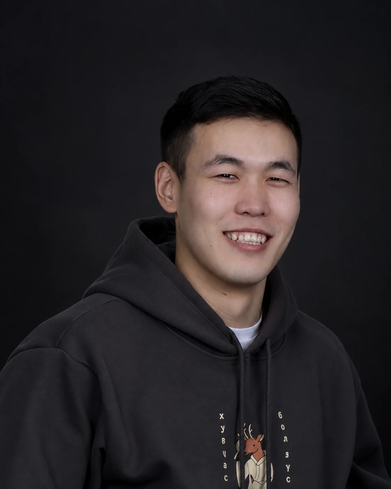

About
Designer, teammate, explorer.
I’m a UX / Product Designer from Ulaanbaatar, Mongolia, currently studying at SCAD in Savannah. My work spans wellness, learning, and complex digital experiences.
I bring visual design, UX thinking, and product thinking together to make experiences clearer. Teamwork, communication, and resilience shape how I approach a problem—and how I keep improving until things work.
Quick facts
- Studying
- B.F.A. UX Design, SCAD
- Graduating
- June 2027
- Looking for
- New-grad product design roles
- Based in
- Savannah, GA · open to relocating
The journey
How I got here.
-
Before
-
Growing up
Ulaanbaatar, Mongolia
Where I grew up, and where a local club full of strangers turned me into a basketball player.
Outside design: a love of basketball
I’m originally from Ulaanbaatar, Mongolia, and I’ve developed a strong passion for basketball. Funny enough, I didn’t enjoy the game much as a kid—until my older cousins kept beating me at it. Determined to improve, I joined a local club with a group of strangers, and over time, I fell in love with the sport.
Basketball taught me more than just how to play—it taught me how to communicate, work as a team, and think strategically under pressure. Those lessons have shaped the way I approach design. My competitive nature pushes me to stay resilient, find creative solutions when challenges arise, and keep improving until things work.
-
-
2024
Dean’s List-
Sep 2024
Started at SCAD
A B.F.A. in User Experience Design at the Savannah College of Art and Design, with an Achievement Honor Scholarship.
-
-
2025
Dean’s List-
Mar–May 2025
Liminal
A wellness app for people with anxiety and depression. We built it as a team of three; the final redesign is mine.
- Team of 3
- 2 rounds of usability testing
-
2025
ContentPlus
Educational screen time for kids, built in 10 weeks as a team of three. I later redesigned it on my own as ContentPlus 2.0.
- Team of 3
- 10 weeks
- Tested with 6 users
-
-
2026
Dean’s List-
Jan–Mar 2026
FINRA x SCADpro
Research and early concepts for a unified, role-based login and dashboard, with a 22-person SCADpro team.
- Team of 22
- Under NDA
-
May 2026
Harley-Davidson Sportster S dashboard
A 4-inch embedded dashboard: states, riding guard rules and alert priority, prototyped in code with AI.
- 88 / 90 checks passed
- AI-assisted prototyping
-
2026
Freelance marketing designer, Amante Pizza & Pasta
Posters, Instagram posts, Reels and menu graphics, plus website updates, for a restaurant in Kirkland, WA.
- Freelance
-
Aug 2026
UNCCD COP17, back in Ulaanbaatar
Contract support staff in the Venue Command Operation Center at COP17 of the UN Convention to Combat Desertification: process maps, workflows and staffing plans.
- Contract
- Ulaanbaatar
-
-
2027
-
June 2027
Graduating, and next up
Looking for a new-grad product design role, and open to relocating.
Get in touch
-